🌍 Roots
I am from Rabat, Morocco’s capital on the Atlantic coast. It is a calm, green city with an old medina, busy souks, gardens and ancient ruins.
It is where I went to school, did my preparatory classes and earned my engineering degree.
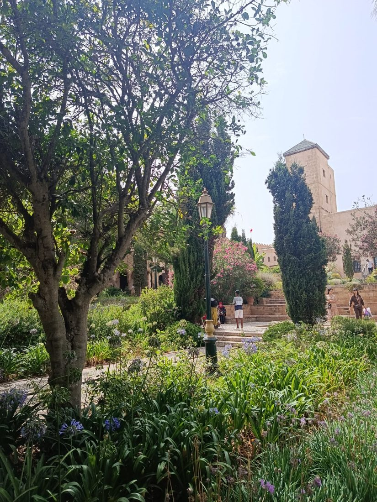
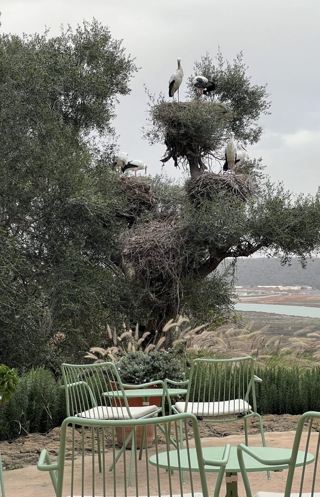
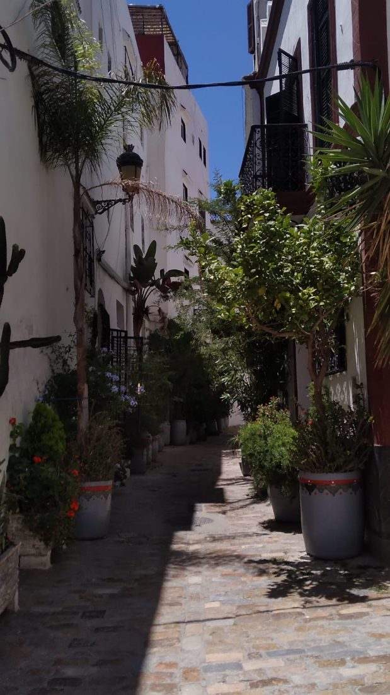
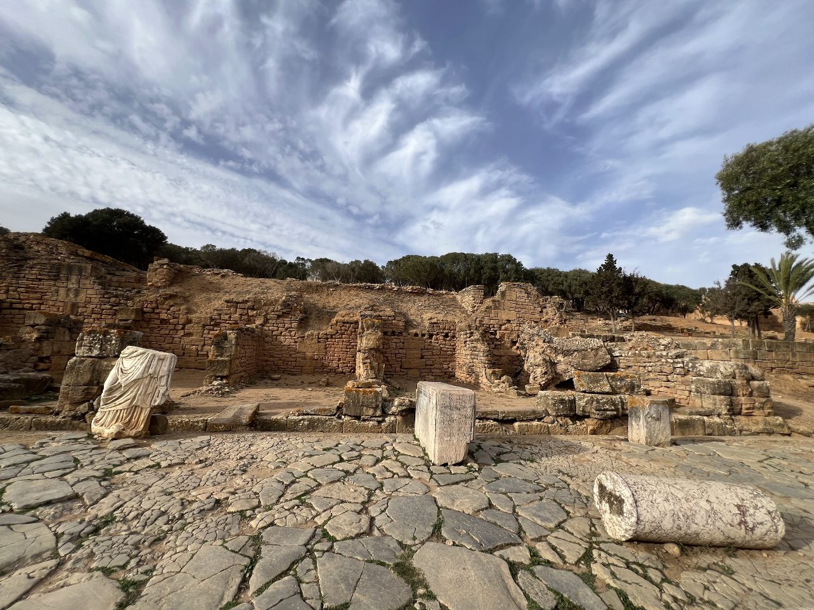
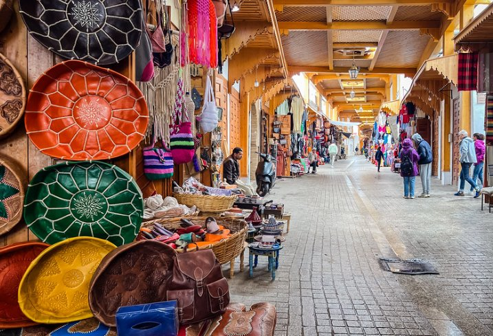
🍂 My path to HWR
After graduating from INPT as a data engineer, I worked mostly in web development, with some data projects along the way. Today I want to grow towards a management role, which is why I joined the Business Intelligence & Process Management Master’s at HWR Berlin.
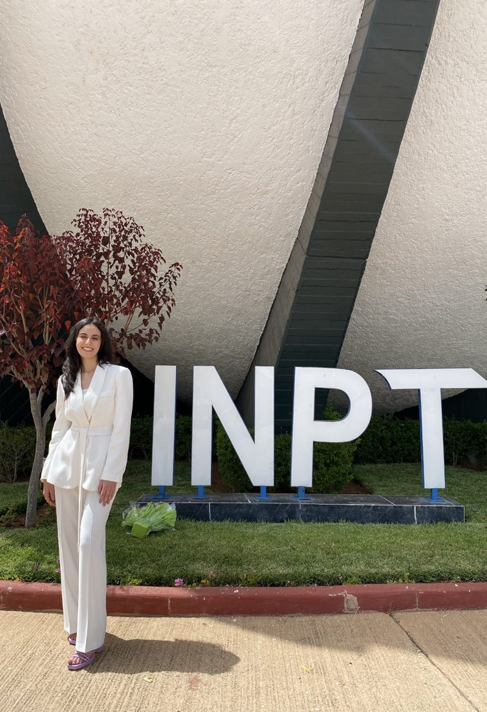
🌱 Education
- 2026 – todayMaster’s in Business Intelligence & Process ManagementHWR Berlin
- 2020 – 2023Engineering degree in Data EngineeringINPT, Rabat
- 2018 – 2020Scientific preparatory classes, Mathematics & Physics (MP/MPSI)CPGE Moulay Youssef, Rabat
- 2017 – 2018Baccalaureate in Mathematical SciencesAbi Dar Al Ghifari High School, Rabat
🌿 Work experience
- Oct 2023 – Jun 2026Freelance Web Developer & Data ScientistBuilt new features for a web platform that helps hospitals plan their operating rooms, with some data work on forecasting and schedulingSmartOp, France (remote)
- Jan – Jul 2023End-of-study internship in SAP BIBI solution for budget planning with SAP Analytics toolsInetum, Morocco
- Jul – Sep 2022Technical internship in AIReal-time detection, tracking and trajectory analysis of vehicles and people at level crossingsMAScIR Foundation, Morocco
- Jul – Oct 2021Internship in web developmentDesign and build of a customised decision chatbot generatorHBS, Morocco (remote)
🌻 What I love
🏛️ Museums
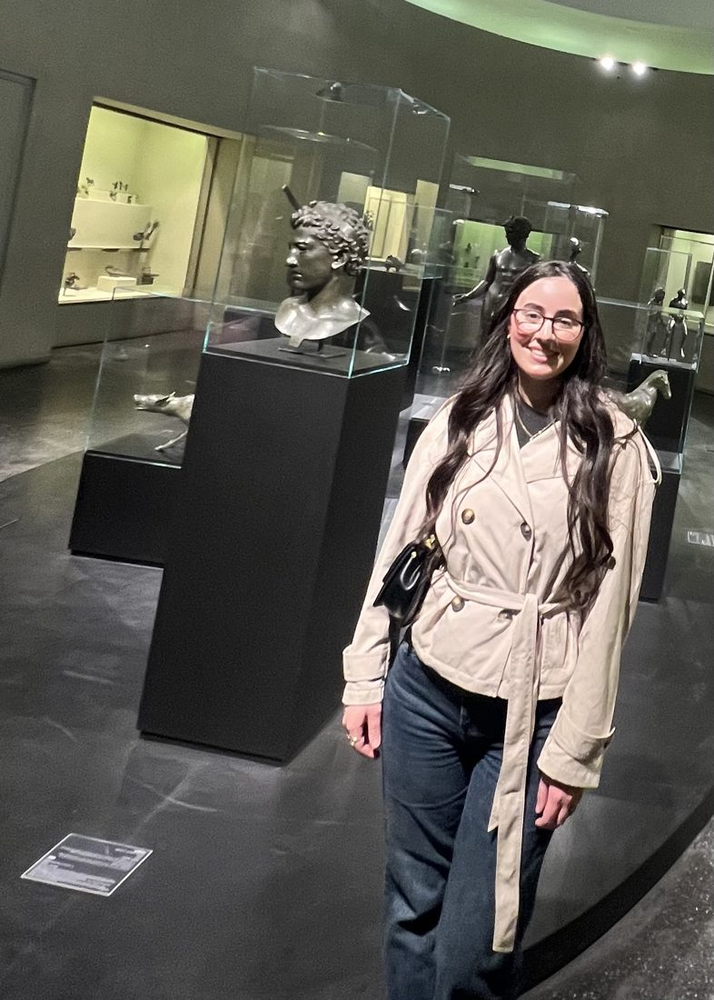
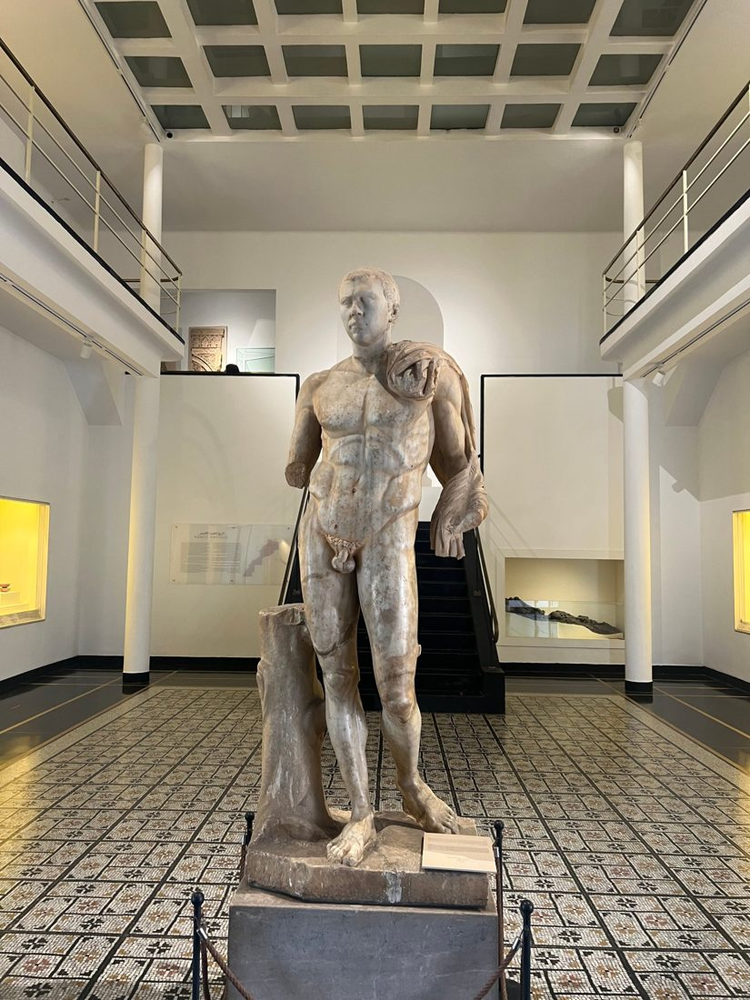
🌿 Nature
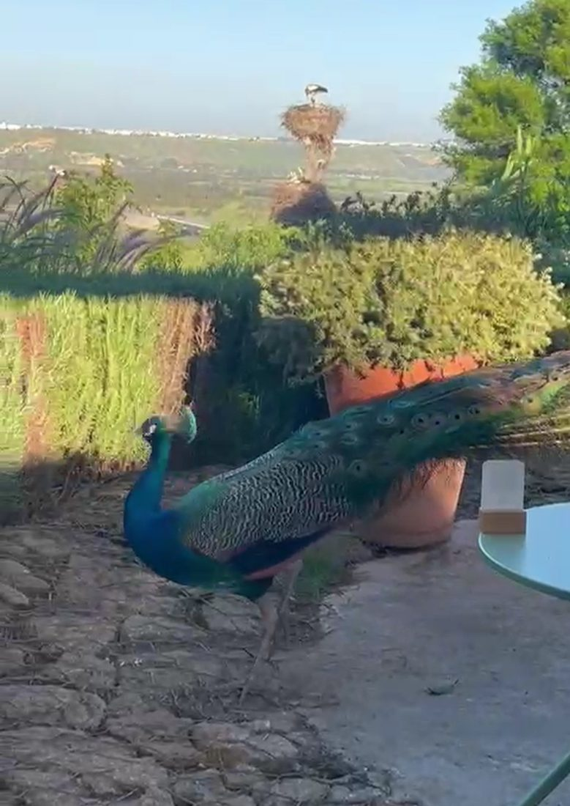
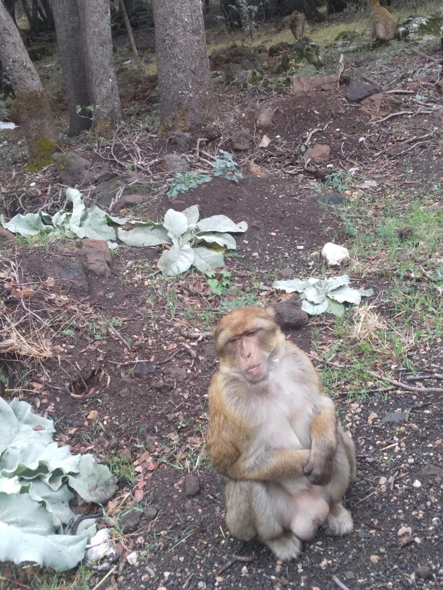
🏺 Pottery
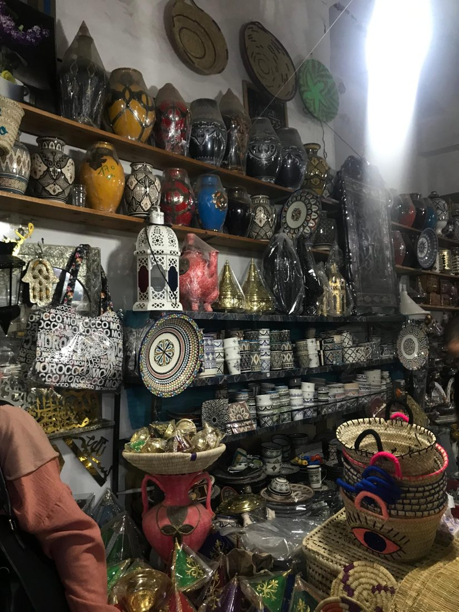
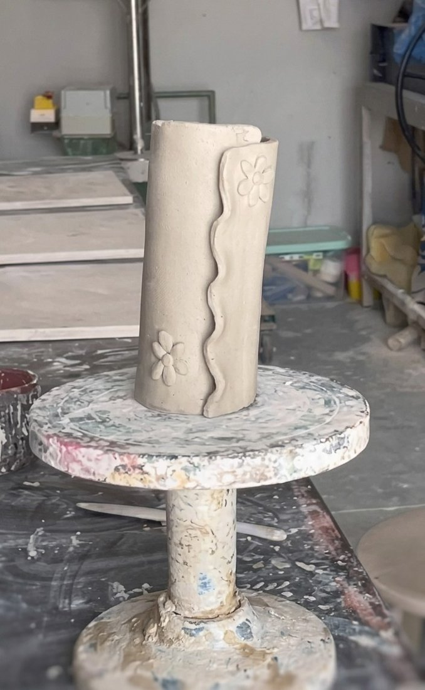
🌼 Languages
Arabic , French, English